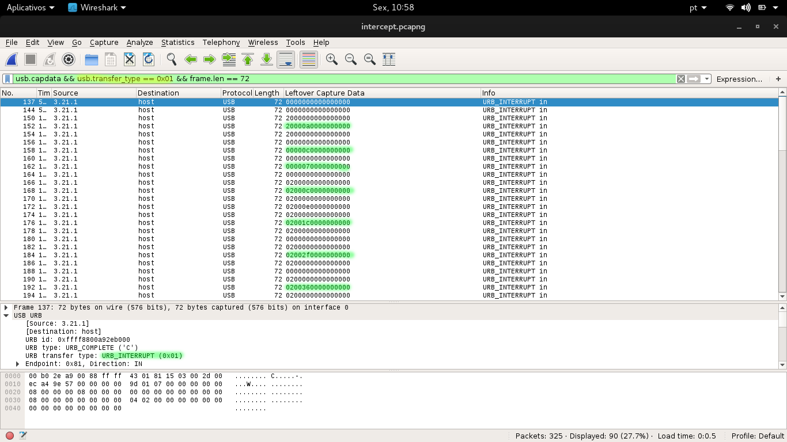

"This traffic was picked up by one of our agents. We think this might be a conversation between two elite hackers that we are investigating. Can you see if you can analyze the data? "
To complete this challenge, you have to capture and decode all keys that were typed at the keyboard by the user that are stored in a file with pcapng traffic USB HID.
References:
http://www.mindrunway.ru/IgorPlHex/USBKeyScan.pdf
$ tshark -r intercept.pcapng -T fields -e usb.capdata -Y 'usb.capdata && usb.transfer_type == 0x01 && frame.len == 72' | sed -e 's\:\\g' > usb _ hid.dat
Leftover capture data:
If the leftover captured begin with "02" or "20" means that the captured key is in capital letters.
Shift:
0200000000000000
2000000000000000
20000a0000000000 : G
00000c0000000000 : i
0000070000000000 : d
02000c0000000000 : I
02000e0000000000 : K
02001c0000000000 : Y
0x0a= g | 0x0c= i | 0x07= d | 0x0c= i | 0x0e= k | 0x1c= y
Dvorak keyboard layout: GidIKY{,j0 _ p1V3:_ x,3O7T _ 4LT,4t5}
Convert Dvorak to Qwerty: IceCTF{wh0 _ l1K3S _ qw3R7Y _ 4NYw4y5}